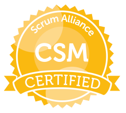

Mejores logros
Principales logros a lo largo de la carrera
Logros académicos y de experiencia en el trabajo.
-

"Certificación en Gerencia de Proyectos del PMI Internacional. "
Por si solo, conseguir la certificación es uno de los logros mas importantes en mi carrera. Me ha permitido estructurar el trabajo en muchos frentes de la tecnología.
-
"Liderazgo en proyectos estratégicos soportados por la PMO Corporativa."
Se han liderado proyectos de todo tipo, entre los mas destacados están:
-Cambios en el ERP. Con procesos de validación de software y control de cambios soportados por el ITSM.
-Sistemas de Facturación Electrónica de varios países de latinoamérica.
-Estratégicos del negocio para incrementar el Revenue a traves de soluciones directas a los clientes, como son las estrategias de eLearning.
-Proyecto de lanzamiento de nuevos productos que incluyen productos medicos de ultima generación.
-
"Certificación LEAN/Six Sigma"
Uso de metodologías de mejora continua LEAN/Six Sigma para resolución de problemas de negocio. Particularmente dos proyectos de mejora en tiempos usando DMAIC y Eventos Kaizen respectivamente.
-

"Certificación CSM Certified Scrum Master"
Se obtuvo el conocimiento para aplicarlo en un gran cantidad de proyectos que requerían ser manejados de manera agil.
-
"Liderazgo en proyectos de desarrollo de aplicaciones móviles"
De la cartera de proyectos de soluciones móviles, se lideró 3 proyectos con metodología SCRUM para el desarrollo de aplicaciones móviles.
-El primer proyecto consistió en una solución para clientes directos para la consulta de una tecnología medica.
-El segundo era una solución móvil que calcula el estado de una enfermedad particular.
-Y el tercero una solución móvil para apoyar el trabajo de medicos. Se evaluó arquitectura de software y se alineo con las tecnologías estándar de la compa√±ía. -
"Liderazgo en proyectos de complejidad mediana a alta."
Se lidero proyectos con las siguientes características que lo hacen complejos:
-Cantidad de stakeholders de alrededor de 80 personas o más.
-Manejo de diferentes zonas geográficas (LATAM, EMEA, APAC).
-Uso de gran cantidad de recursos de apoyo para suplir el "Face to Face" en proyectos que es obligatorio hacerlo.
-Proyectos con presupuestos de inversión superiores a los USD 500K. -
"Desarrollo de componentes y artefactos para soportar procesos específicos de negocios en plataforma Java."
Se lidero iniciativas de desarrollo para soportar:
-Sistemas de nómina.
-Sistemas de administración de cartera.
-Sistemas de facturación electrónica donde la entidad fiscal exige cambios con ventanas de tiempo muy reducida. -
"Uso de metodologías ágiles apoyadas en plataformas."
Se lideró proyectos con el uso de SCRUM apoyados con la plataforma JIRA, donde se manejo todo el ciclo para la obtención de los incrementos del producto. El manejo de los flujos de despliegue se ejecutó con Bitbucket. Ejecución realizada con personas y equipos geográficamente dispersos.
-
"Evaluación de arquitectura de solución en proyectos"
Se realizó la evaluación de arquitectura de solución en multiples proyectos de la region de LATAM, permitiendo una alineación con las arquitectura de referencia de la compańia.
Los proyectos se nombran de manera genérica para no comprometer el Knowhow de las soluciones desarrolladas. No se puede dar detalle de los mismos ya que constituyen derechos de propiedad intelectual de mis empleadores. Todos estos logros han tenido algo en particular, la aplicación practica de los conocimientos adquiridos en la academia.